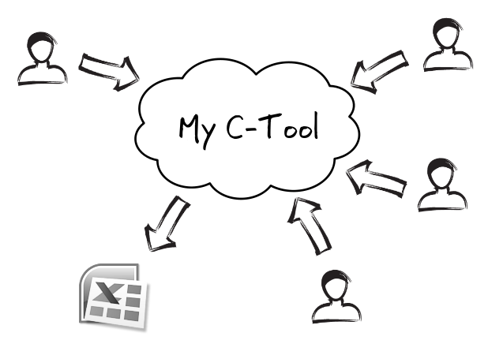

Collecte d'informations décentralisée
Définissez les informations à collecter, vos contributeurs saisissent les données et vous les récupérez au format Excel !
Avec My C-Tool vous :
- Simplifiez votre processus de collecte
- Conservez vos données sources sur le cloud
- Faites évoluer votre collecte à tout moment
